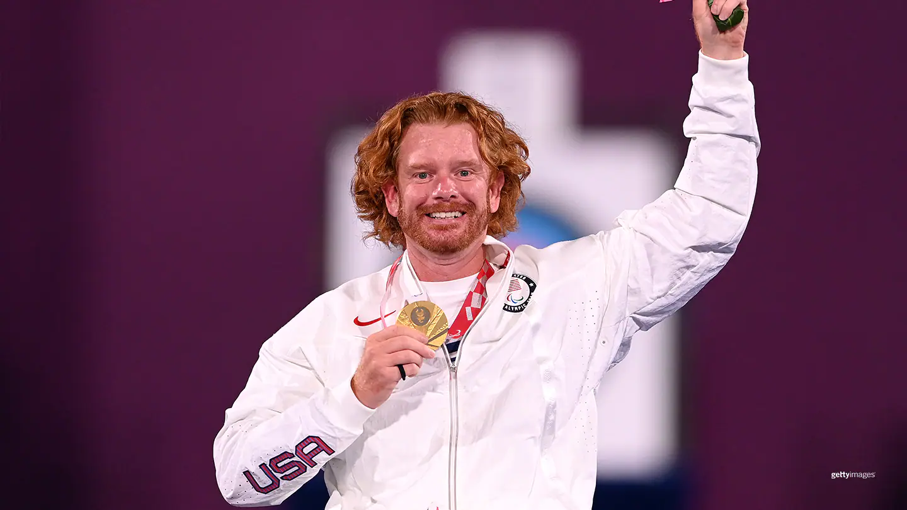

Kevin Mather`s Gold Medal Highlights U.S. PARA Archery Performance in Tokyo
Kevin Mather has always been a multisport athlete in more ways than one, from competing as both an able-bodied and adaptive athlete, from Ironman triathlons to the para alpine skiing world championships. He’s leaving Tokyo as the champion of yet another sport: archery. The 38-year-old from Santa Clarita, California, won gold in men’s individual recurve W2 and the only medal for the U.S. archery team in Tokyo. This was his Paralympic debut. “It feels heavy at the moment. It feels incredible,” Mather said after getting the medal. “This is my first time seeing one from these Games up close. I’m just blown away.” Mather entered the Paralympic Games ranked No. 10 in the world, but this isn’t the first time he performed well in a debut. His first archery event ever was the 2017 World Archery Para Championships and he won silver in the team event. Mather defeated China’s Lixue Zhao in the final event, 6-4. Mather is the first U.S. athlete to medal in individual recurve since Lindsey Carmichael won bronze in 2008. Although Mather was the only medalist, Lia Coryell was oh-so-close in the women’s W1 competition. The 56-year-old from La Crosse, Wisconsin, made it to the bronze-medal match and finished fourth in her division at her second Paralympic Games. “Made it to the Bronze medal match!” she said on Instagram. “Won 2/3 of my elimination matches and am proud of my accomplishment. My arrow average and match averages went up for new PB. Stoked to have been able to wear this uniform with the American flag and my name on it. Leaving to fly back to the states tomorrow. Thank you to everyone who supports me!” Matt Stutzman, Andre Shelby and K.J. Polish all competed in the men’s compound division but went out in the elimination rounds before having a chance to compete for medals. Bennett joined Mather in the recurve competition and was also out in the elimination round, as was 21-year-old Emma Rose Ravish, who made her Paralympic debut in women’s recurve. Ravish and Bennett also competed in the first-ever mixed team recurve event at the Paralympic Games and finished ninth. “I had a blast shooting with @ebarchery today for the first mixed team event at the Paralympics!” she wrote on Instagram. “It was the best I’ve shot in a match, and I’m pleased with the performance! Another post to come soon, as the #tokyoparalympics comes to a close.”